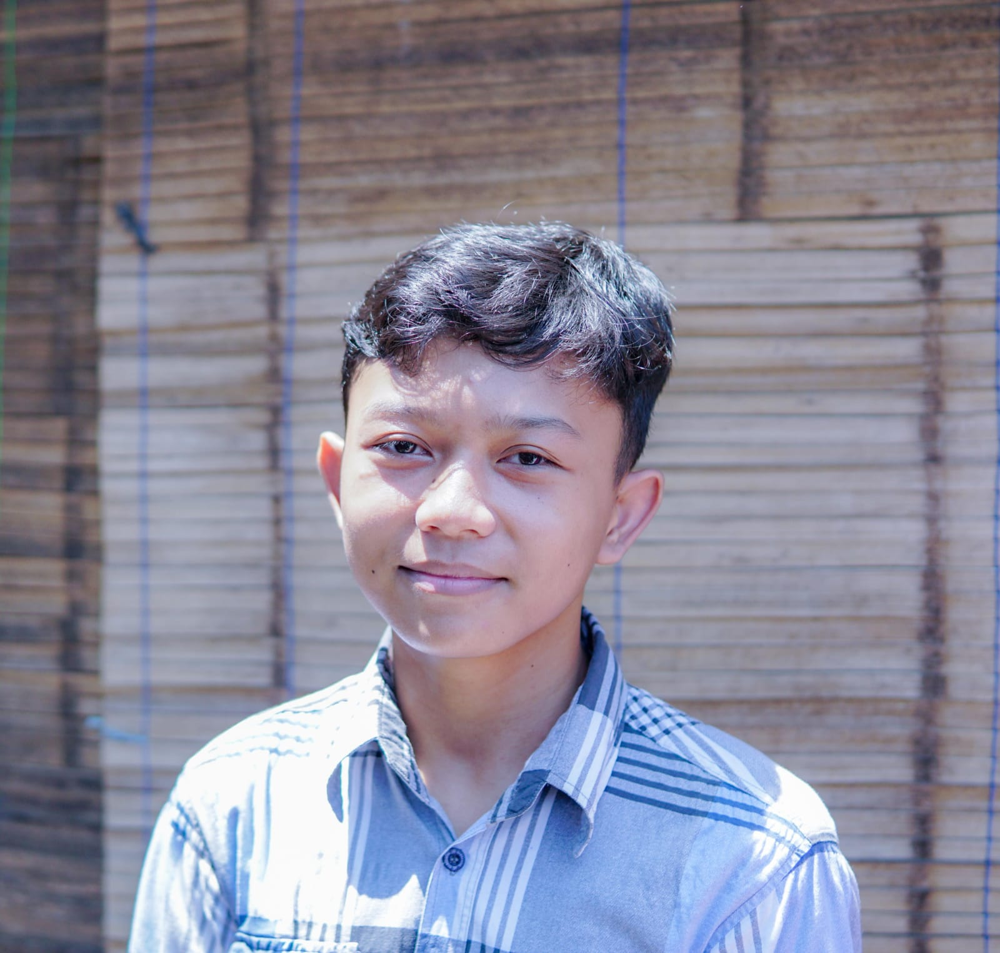
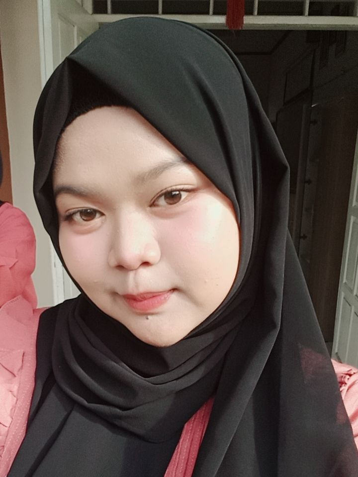
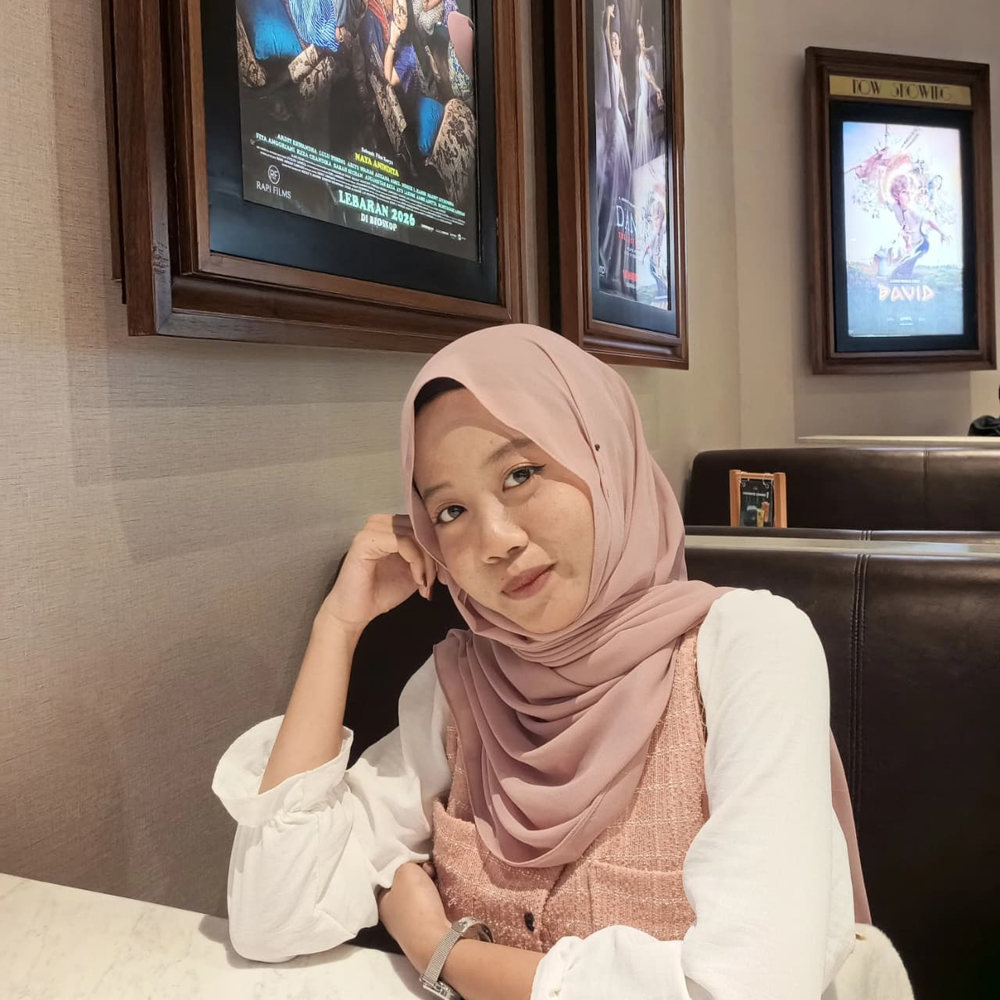
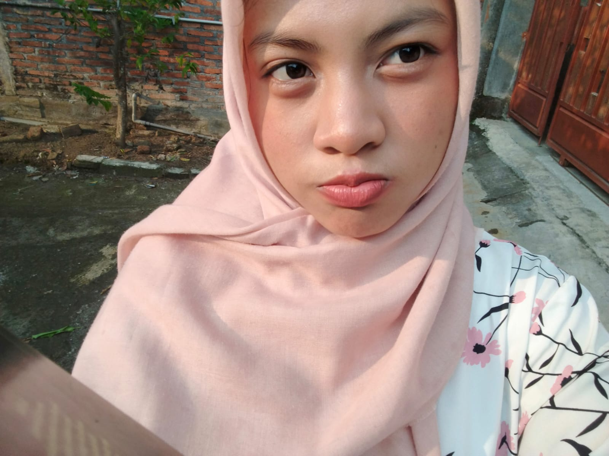

🌿 About Us
Welcome to the Carboon Footprint Calculator. This application is designed to help users measure and understand their daily carbon emissions. By entering information about transportation, electricity usage, and waste production, users can calculate their carbon footprint quickly and accurately.
Our goal is to increase environmental awareness and encourage sustainable habits. The application also provides recommendationsto help users reduce their environmental impact and contribute to a healtheir planet.
We believe that small actions can make a big diffeerence through this platform, we hope to inspire individuals to make environmentally friendly choices and support a more sustainable future.
Profil Anggota Kelompok
Kenalan dengan tim hebat kami
Dikta Marzuqie
Full-Stack Developer
X PPLG 2 / 9
Santya Satya Kinanti
UI/UX Designer
X PPLG 2 / 26

M. Fauzul Adhim
Web Designer
X PPLG 2 / 20

Destya Inayah
Back-End Developer
X PPLG 2 / 8

Kayla Marsya'atur R.
Content Researcher
X PPLG 2 / 15

Jovita Fuji J.
Content Researcher
X PPLG 2 / 14
📚 Lihat Materi
🌿 Biografi Tokoh Lingkungan Hidup
🤲 Renungan khutbah
🎭 Pacelathon
📏 Lembar Cakar & Validasi Hitung
🧮 Kalkulator Karbon
📜 Sejarah Gerakan Lingkungan Hidup
📖 Kamus Istilah Teknis
📊 Grafik & Hasil Analisis
🖥️ Flowchart Sistem
💻 Wireframe Website
📔 Logbook & Notulen
🏃 K3 & Tips Kesehatan
📂 Portofolio
Bukti kolaborasi Sumatif Akhir Tahun (PSAT) lintas disiplin ilmu dalam mewujudkan solusi digital pelestarian lingkungan.
Teologi Kelestarian Alam & Pesan Etis
Penelaahan spiritual keagamaan mengenai tanggung jawab manusia sebagai khalifah penjaga alam. Menentang perilaku boros energi (tabzir) dalam konsumsi kehidupan sehari-hari.
Musyawarah Mufakat & Gotong Royong
Implementasi sistem demokrasi dalam pembagian peran kerja tim secara adil tanpa diskriminasi, manajemen konflik internal kelompok, serta perwujudan nasionalisme merawat bumi.
Teks Biografi Tokoh Lingkungan Hidup
Penyusunan teks biografi tokoh pejuang lingkungan hidup nasional/global sesuai dengan struktur penulisan yang baku serta kaidah kebahasaan teks yang tepat.
Kronologi Emisi & Revolusi Industri
Menganalisis sejarah Revolusi Industri (1.0 hingga 4.0) sebagai akar historiografi lonjakan emisi gas rumah kaca akibat peralihan mesin uap ke bahan bakar fosil dunia.
UI/UX Desain & Estetika Visual Web
Perancangan visual antarmuka digital yang ramah pengguna, pembuatan paduan kombinasi warna bertema hijau-ekologi (moodboard), serta penataan tipografi teks.
Aljabar Fungsi Persamaan Linear
Menerjemahkan variabel emisi karbon dunia nyata menjadi model fungsi persamaan linear terstruktur, serta melakukan aritmatika manual untuk pembuktian tingkat akurasi data.
UI Localization & Technical Glossary
Penerjemahan teks antarmuka (localization UI) menggunakan istilah teknis internasional komputasi lingkungan, serta penyusunan deskripsi produk dwi-bahasa (Bilingual).
Berpikir Komputasional & Flowchart
Penerapan metode dekomposisi sistem kalkulator, perancangan logika percabangan, pengkondisian data input-output, dan pembuatan diagram alir sistem yang logis.
Konversi Energi & Analisis Saintifik
Menganalisis fenomena konversi energi, reaksi pembakaran fosil secara ilmiah, menyajikan data faktor koefisien emisi gas rumah kaca, serta merumuskan aksi nyata peduli bumi.
Coding Inti & Sistem Error Handling
Proses pengodean inti aplikasi web menggunakan HTML, CSS, dan JavaScript secara fungsional, pengelolaan berkas folder aset digital, serta penanganan error data input kosong.
Skrip Pacelathon Unggah-Ungguh Basa
Penyusunan teks dialog interaktif berbasis unggah-ungguh basa Jawa (Ngoko lan Krama) yang bertujuan mengedukasi masyarakat mengenai pentingnya merawat alam sekitar.
Jurnal Cheklist Observasi K3 & Tips Aktivitas Sehat
Analisis kolerasi emisi transportasi harian terhadap kebugaran jasmani masyarakat, serta penerapan ergonomi posisi kerja komputer (K3) selama koding di lab.